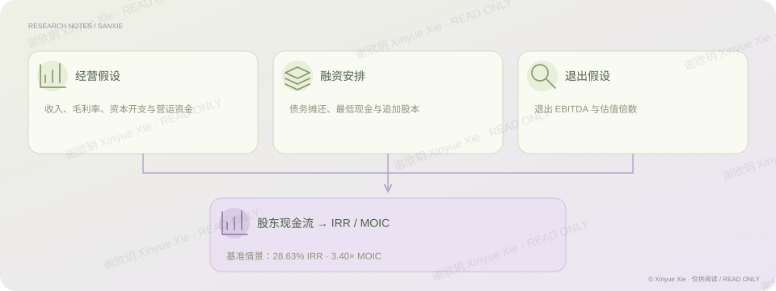

收购笔试案例 · 10 页备忘录及配套模型
三协电机：回报背后的条件
增长能否支持一笔杠杆收购？
PROJECT NOTES / THE BIG PICTURE
研究思路

01核心判断
在三协电机收购案例中，我没有只把模型算出的回报率作为结论，而是继续追问：增长来自哪里，毛利为什么变化，利润能否变成偿债所需的现金？研究将设备需求拆到电机价值量、供货份额和价格，并把产品毛利、应收账款、资本开支及追加股本连进收购模型。案例得到 28.63% 的模型年化股东回报，但前三年还需追加约 1.03 亿元股本，因此备忘录的判断是先验证经营恢复与融资条件，再决定是否推进交易。
02分析过程
先检验收入逻辑：下游设备增长，必须经过单机电机价值量、公司供货份额和售价，才能转化为公司收入；机器人是待验证的增量。 再解释利润变化：把产品结构变化与同类产品自身毛利下滑分开，识别放量是否伴随盈利质量改善。 把利润转成现金：连接应收、资本开支、债务偿还、最低现金和股本追加，按每期真实股东现金流计算回报。 再形成投资判断：在进入和退出倍数相同的案例中，回报主要依赖经营改善，因此尽调需要验证利润恢复和融资可得性。
03关键证据
毛利桥分析显示，约 81% 的集团毛利率下降来自同类产品内部盈利变化，而非仅由产品结构改变解释。收购模型还显示，前三年需追加 102.56 百万元股本。把这两点与回报放在一起，尽调问题就更明确：经营恢复能否兑现，股东又能否承担现金缺口？见备忘录第 6、8–10 页及配套模型；均为案例条件下的分析。
相关经历收购笔试案例
理解商业
把下游增长拆到公司能实际获得的收入与毛利。
建立模型
联动经营、偿债与追加股本，计算完整股东现金流回报。
检验证据
用毛利桥与现金缺口，确定尽调需要验证的问题。
谢欣玥 Xinyue Xie · 研究作品仅供在线阅读
← 返回全部作品